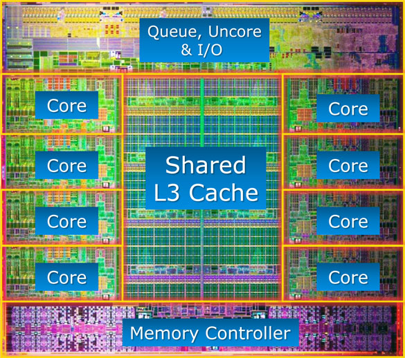

CPU
The heart of computer
The CPU, Central Processing Unit which is the most important thing for any computers. There are two manufacturer produce CPU for PC market which are Intel and AMD.
Performance
Core frequency
Core frequency or called clock rate, common unit is Megahertz (MHz) or Gigahertz (GHz). Core frequency representing CPU’s computation and data processing speed. Usually, with the same generation architecture and same core count, higher frequency means better performance.
CPU’s core frequency = Multiplier x Bus Speed. However, CPU’s performance and core frequency are not sample linear relation. Architecture and core counts is much more critical for performance.
Did you know: the Xeon E5-2699 v3 @2.3 GHz is over 3 times faster than i7 4770k @4.0 GHz.*
Bus Speed
Bus Speed is a base-frequency for CPUs, unit is MHz. Bus Speed decided speed of the whole mother board.
Cache
Cache is a kind of memory and it is the nearest memory for cores. High speed cache is working at CPU clock rate. Cache’s read-write speed is faster than memory and hard drive. The most common instructions and data block will be storage in cache to reduce memory-read time and increase CPU processing efficiency.
Cache is a kind of memory and it is the nearest memory for cores. Cache also has different level: L1 Cache, L2 Cache and L3 Cache.
L1 Cache
L1 Cache is the 1st level of high speed cache, included data cache and instructions cache. L1 Cache is built-in CPU for each core separately. Usually, in the main-stream PC CPU (i.e. Intel Core i7 and AMD Ryzen 1700), L1 Cache has 32 KB for data and 32 KB for instructions. In the server level CPU, L1 Cache could up to 256 KB.
L2 Cache
L2 Cache is the 2nd level of the CPU cache. L2 Cache has two separate parts: inside and outside cache. Inside L2 Cache working frequency at CPU clock rate. Outside L2 Cache working at half CPU clock rate. L2 Cache also accelerate CPU performance. Usually, L2 Cache has 256 KB for each core in CPU.
L3 Cache
In recent years, L3 Cache is shared with every core in CPU. L3 Cache also called ‘Shared Cache’ or ‘Smart Cache’ which called by Intel. L3 Cache could storage common using files and larger L3 Cache will give CPU longer queue. In the Core i3/i5/i7, L3 Cache usually has 4 MB/6 MB/8 MB and 20 MB for Extreme Edition. In AMD’s brand new Ryzen CPU, L3 Cache has 20 MB. For the server level, L3 Cache will up to 60 MB.
Manufacturing
Wafer
The first step to produce CPU is make the wafer. Wafer’s material is silicon, purity up to 99.9999%.
Lithography
After purified silicon and make wafer, the next step is put a layer of special material called Photoresist on the silicon-oxide layer. And CPU circuit will print on the wafer by UV. This step is called photolithography.
Etching
Etching is the most important step of manufacture CPU. Etching used the most advanced light technology. In this step they use UV light expose photoresist to make transistors. The most advanced PC CPU is power by 14nm Etching technology.
Did you know: only one main-stream CPU, Core i7 7700k has 1.4 billion transistors on the die, Ryzen 1700 has over 4.8 billion transistors!
Cutting
The final step is Packaging. After Photolithography and Etching, everything on the CPU has been done. Cutting wafer specific area of rectangular and that was the most important for each CPU, called Die. However, that still cannot be used directly. They need packed in to ceramic or plastic container.
Generally, there are three methods for Package: BGA, PGA and LGA. BGA seal CPU on mother boards which means user cannot change or upgrade CPU in the future. BGA is popular on the laptops or embedded devices. PGA packaged connector pin on CPUs and users able to upgrade in the future, PGA is used by AMD in common. LGA is similar to PGA, but connector pin is on mother boards.
Better CPU has more complex package like LGA 2011-3 for Xeon E5 v3/v4 or AM4 for Ryzen.
Architecture
Architecture is another important parameter which representing CPU performance. Architecture design is the most difficult part during producing. Better architecture design could have higher efficiency.



(from left to right: Sandy-Bridge E, Haswell E and Boardwell E architecture)
Attention: Any tiny mistake colud make a PERMANENT DAMAGE
DON'T try it if you are new for OC.
OC is the most economic method to inscrease your computer performance, but any wrong value setting could cause permanent damage. So before you OC your computer, please go to internet and read some post carefully which write by someone who has a same CPU as you have.
Overclock your CPU with software
© Yanlong LI
This web is a part of assignment of COMP1710 @ ANU
* The test result is based on CINEBENCH render test, Xeon E5-2699 v3 and i7 4770k both powered by Haswell technology